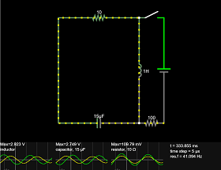
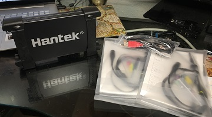

8/07/2022 1:00 AM: -- Hantek 6022BE
I have never owned an oscilloscope. However to delve deep into electronics it is probably one if the most essential tools after a multi-meter. So recently I did some research on what I should buy as my first one. A really good hobby oscilloscope is going to run you somewhere around $300 to $500. But I was not prepared to put down that much money for one, yet. I’ve got to make more progress on learning and experimenting. I am not sure I am committed enough to the hobby to invest on more expensive equipment. I’ve had some success building experiments and test circuits, but it has not been w/o it’s pitfalls. The amount of detail you have to keep track of is a lot and it’s easy to make silly mistakes w/o being careful. My eyesight is not too good. So I got a good desk magnifier/lamp that helps tremendously. And my soldering skills have much to be desired. I have practiced recently and I have gotten better.

So I looked into what I could get at a price point above those cheap hand-held kits that are practically worthless. And I came to the decision to give the Hantek 6022BE a try. It is a USB oscilloscope. You hook it up to a PC to use as the screen and controls. I picked one up from Amazon for $64.
Even though there are some YouTube videos that say stay away from USB oscilloscopes, there are some favorable reviews too. In particular Adrian's Digital Basement did a review of it: How good can a new $60 oscilloscope actually be? (Hantek 6022BE Review). And even though he is critical of it to a certain degree, his conclusion is that for the price, it is worth it. It is capable enough to troubleshoot retro 8-bit computers. Even though that is not the primary reason I need an oscilloscope. Then he made another video: How to fix an 8-bit computer with only cheap tools minutes 4:45-9:15 where he talks about newer open source software for it: OpenHantek6022. Which is a great improvement over the software that comes with it. And since I am all about open source software, this really sold me on it.
I have yet to turn the thing on, but I should be getting to that soon and I will write another blog or two about it. I believe I will be able to learn quite a bit on this oscilloscope even w/ its faults which will prepare me to when I decide to get a better one. That experience and knowledge will be more than worth the price of it.
8/06/2022 9:45 PM: -- Electronics
This will be a series of blog/articles about Electronics. I am still learning electronics. The goal is to methodically document my progress to help me retain what I am learning. And hopefully others might get something out of it. This will be similar to the FPGA blog/articles section where I’ll be creating mini projects that experiment with different analog and digital circuits. Where I mix in FPGA, those articles will appear in the FPGA section.